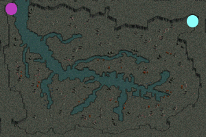
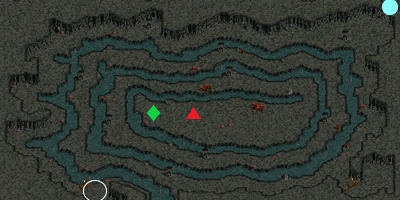
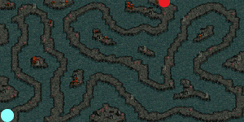

蟲巣窟の隠された洞窟
| 制限Lv | 25～40 |
|---|---|
| 秘密の入口 | 蟲の洞穴（7.10） |
| 報酬 | 経験値10万+14万 |
| ミニマップの表示条件 | マップ製作者Lv1 |
| フィールド属性低下 | なし |
| 罠 | 床罠あり 扉罠なし |
<マップ>
秘密の入口 蟲の洞穴
|  | ● ● |
… 移動ポータル … 秘密の入口 |
秘密ダンジョン 1層目 蟲巣窟の隠された洞窟B1
|  | ○ ● ◆ ▲ |
… 初期位置 … 移動ポータル … テルス … クリーパー |
秘密ダンジョン 2層目 蟲巣窟の隠された洞窟B2
|  | ● ● | … 移動ポータル … 脱出扉 |
<手順>
1層目 蟲巣窟の隠された洞窟B1
扉を開ける。
クリーパーの周りの殺人蚊の群れ（Lv32）Zin5匹を釣って狩る。
クリーパー（Lv35）Zinを狩る。
タゲを取ってから倒し終わるまでマップ内のPTメンバー全員が5秒毎に固定ダメ80を受ける。
リーダーがテルスに話す。
テルスとPTメンバー全員がB2へのポータル付近へワープ。
リーダーがテルスに話す。経験値10万
2層目 蟲巣窟の隠された洞窟B2
PTメンバーがMOBのタゲを取るとカウント開始。
マップ内のPTメンバー全員が一定時間毎に固定ダメ10を受ける。
5分以内に扉（50.2）をクリック。だれでも可。経験値14万
<補足>
扉は破壊可。アンロックドアLv6、鉄の扉鍵でも開錠可。
鉄の扉鍵はアリアンのロマちびっこ（16.131）から6万Gで購入できる。
床罠は物理・火・光ダメ、コールド、暗闇、スタン、低下など。
B2の床罠は強力な罠はない。解除する時間も惜しいのでそのまま突破で可。
B1の床罠は360↑ダメの強力な床罠が多数あるので鍵シフが必要。
床罠を探知・解除するのに必要なスキルは、トラップ探知Lv5、ディザームトラップLv10。
他のメンバーは鍵シフの前に出ないこと。
クローラーやラルヴァのノックバックで床罠の上に飛ばされないように、壁を背にして攻撃すること。
鍵シフがいない場合は、リトルのアストラルスピリットLv2で罠を可視し、罠踏み役を先頭に強行突破でも可。
罠踏み役は最低でもHP300↑と復活が必要。
天使のサンクチュアリLv1で罠ダメは回避できるが、状態異常は避けられない。
サマナの召喚獣に床罠を踏ませても可。
クリーパー戦 注意点
クリーパーはノックバック・ワーム攻撃・CP奪取あり。
固定ダメ80は抵抗不可。サンクチュアリで回避は可。
固定ダメ80とワームを同時に受けるとPT壊滅の危険性が高いが、ワームを封じることで若干安全になる。
ワームは近距離物理攻撃に対して発動するので、以下の方法で封じることができる。
(1) 純魔法攻撃職
(2) 遠距離火力+足止めリトル ノックバック、CP減少も避けられる
(3) 遠距離火力+デュエリング剣士 ノックバック、CP減少も避けられる
クリーパー戦に耐えるには、最低でもHP120と薬回復100％、赤POTが必要。
できればHP200↑と自リロ、復活アイテムを用意。
クリーパー戦用の推奨装備
| 自動リロードレザーベルト 最大HPLv4（+11）鱗ベルト 最大HPLv6（+30）鉄の帽子 最大CPLv3最大HPLv3力Lv3首飾り |
要求Lv27 要求Lv30 要求Lv31 要求Lv10 |
古都の冒険家協会の装備商人にて921Gで販売 古都のゼンシの防具店のゼンシにて3429Gで販売 プレシャンとチンピラクエスト報酬 新しい出発クエスト報酬 |
| MOB | 使用スキル | 詳細 |
|---|---|---|
| 殺人蚊の群れ （殺人蚊の群れZin) |
共鳴 | 攻撃力上昇 |
| メルティングウェポン | 攻撃力低下 | |
| ポイズンテイル | 火+毒ダメ | |
| 蟲の群れ （蟲の群れZin) |
共鳴 | 攻撃力上昇 |
| ピンシャーアタック | 物理ダメ | |
| クリーパー （クリーパーZin) |
ディスチャージアタック | CP減少 |
| 体当たり | 物理ダメ ノックバック | |
| ワームバイト | 闇ダメ 移動不可 | |
| クローラー （クローラーZin) |
ディスチャージアタック | CP減少 |
| 体当たり | 物理ダメ ノックバック | |
| ラルヴァ （リーチZin) |
ヘルカーニバル | 物理ダメ 致命打 |
| 体当たり | 物理ダメ ノックバック |
秘密ダンジョン補足
- 通称「蟲秘密」（むしひみつ）- 2層目の脱出は5分以内とかなりシビアなため、敵スルー推奨。
- ギルドに加入することでギルドスキルを活かしてHPを大幅に増やせます。